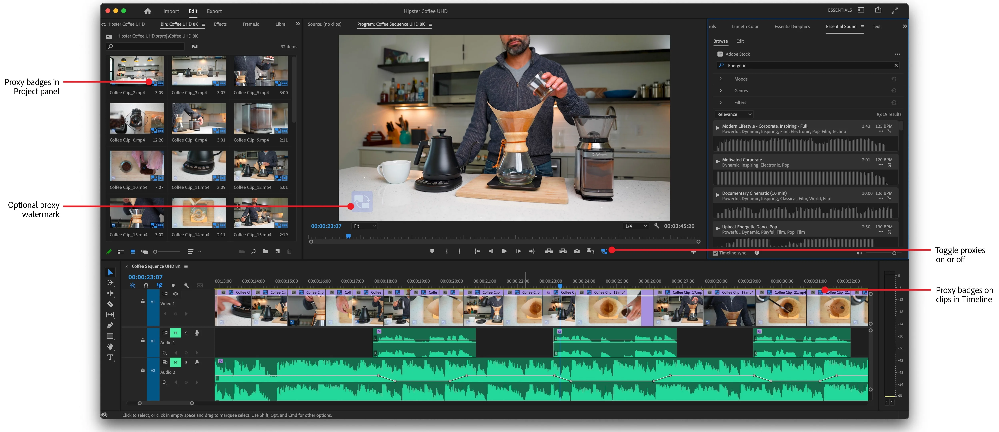
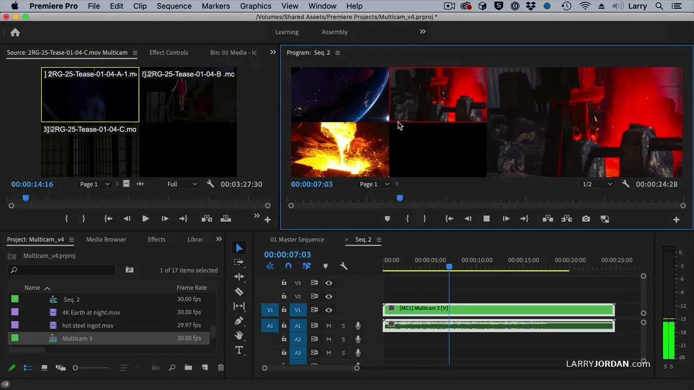

영화 편집 타임라인의 위상적 구조에 대한 소고
On the Topological Structure of Film Editing Timelines
Abstract. 이 문서는 영화 편집 실무에서 반복적으로 겪는 구조적 문제를 수학적으로 프레이밍하려는 시도이다. 핵심 주장은 다음과 같다. 영화 편집은 촬영된 시공간적 사건들을 잘라내고 다시 잇는 작업이며, 결국 고차원 상태 공간에서의 경로 찾기이다. NLE (non-linear editing)의 인터페이스는 이 상태 공간을 시간, 공간, 리듬 등의 서로 다른 축에 따라 잘라서 보여주는 저차원 뷰들의 집합이다. 타임라인, 파형, 프로그램 모니터와 같은 뷰들은 고차원 편집 상태를 UI라는 저차원 표면 위에서 판별 가능한 몇 개의 축으로만 투영한다. 멀티캠 같이 추상화된 컨테이너 구조가 투영들 사이의 일관성을 깨뜨릴 때, 이 상태 공간의 위상(연결성·도달 가능성)과 경로의 비용 구조(어떤 경로를 “최적”이라 부를 수 있는지에 대한 기준)는 함께 뒤틀린다. 이 글의 질문은 다음과 같다. 주어진 소스(configuration space)와 제약(장르, 러닝타임, 감독 의도) 하에서, 편집 도구의 인터페이스는 어떤 조건에서 고차원 편집 상태와 저차원 뷰 사이의 대응 관계를 유지할 수 있으며, 그 안에서 편집자의 직관이 탐색하고 있는 “최적 경로”를 수학적 언어로 어떻게 기술할 수 있는가?
Keywords. state space, projection, configuration space, Non-Linear Editing, cognitive cost
1. 시공간을 자르고 붙이는 행위로서의 영화 편집
1.1. 컷의 발명: 연속에서 불연속으로
최초의 영화에는 편집이 없었다. 뤼미에르 형제의 초기 영화인 ‘열차의 도착 (1896)’, ‘공장을 나서는 노동자들 (1895)’ 은 단일 쇼트(shot)로 구성된 “움직이는 사진”이었다. 카메라는 고정되어 있고, 아날로그 영화 필름 한 롤이 다할 때까지 현실을 있는 그대로 기록했다. 초기 영화에서의 시간은 연속적이고, 공간은 단일했다.
편집, 그러니까 컷의 발명은 시간의 연속성을 의도적으로 끊는 행위이다. 조르주 멜리에스는 촬영을 멈추고 피사체를 바꾼 뒤 다시 촬영함으로써 “마술적 전환”을 만들어냈다. 에드윈 포터의 ‘대열차 강도(1903)’는 서로 다른 장소에서 촬영된 쇼트들을 이어붙여 하나의 내러티브를 구성했다. 그리고 D. W. 그리피스는 ‘국가의 탄생(1915)’과 ‘인톨러런스(1916)’에서 교차 편집, 클로즈업, 페이드 등의 기법을 체계화하여 현대 영화 문법의 기초를 놓았다.
쿨레쇼프는 쇼트 간 충돌에서 의미가 창발함을 보였고, 에이젠슈테인은 이를 변증법적 몽타주로 정립했다. 편집은 단순한 이어붙이기가 아니라, 연속적 현실을 불연속적 조각들로 해체한 뒤, 새로운 시공간 질서를 재구성하는 의미 생성 행위라고 볼 수 있다. 편집자는 물리 세계의 인과율에 구속되지 않는 새로운 인과를 창조한다.
1.2. 월터 머치의 여섯 가지 규칙
월터 머치는 지옥의 묵시록, 대부 시리즈, 잉글리쉬 페이션트 등을 편집한 거장이다. 머치는 필름 시대의 Moviola와 Steenbeck에서 시작하여 2000년대 콜드 마운틴을 애플의 비선형 편집 툴인 Final Cut Pro로 편집한 최초의 메이저 스튜디오 작업자이기도 하다. 물리적 필름 스트립을 면도칼로 자르던 시대에서 비선형 편집(NLE)으로의 전환을 직접 경험한 인물이 In the Blink of an Eye(1995, 2nd ed. 2001)에서 제시한 “여섯 가지 규칙”은 매체의 변화에도 불구하고 유지되는 불변량(invariant)을 제안한 것으로 볼 수 있다.
| 순위 | 기준 | 가중치 |
|---|---|---|
| 1 | 감정 (Emotion) | 51% |
| 2 | 이야기 (Story) | 23% |
| 3 | 리듬 (Rhythm) | 10% |
| 4 | 시선 추적 (Eye-trace) | 7% |
| 5 | 평면성 (Planarity, 180° 규칙 등) | 5% |
| 6 | 공간 연속성 (Spatial continuity) | 4% |
상위 기준을 만족시키면 하위 기준의 위반은 용서된다. 감정과 이야기가 맞으면 공간 연속성이 깨져도 관객은 눈치채지 못하거나 개의치 않는다. 그러나 그 역은 성립하지 않는다. 이는 영화 편집이라는 최적화 문제에서 비용 함수의 공식을 제안한 것이라고 볼 수 있다. 도구가 필름이든 NLE든, 최종적으로 최적화 할 것은 동일하다.
1.3. 고차원 최적화로서의 편집
왜 “고차원”인가? 머치의 목록 자체가 답이다. 편집자가 컷 하나를 결정할 때, 최소 여섯 개의 축을 동시에 고려해야 한다. 감정(E), 이야기(N), 리듬(R), 시선(G), 평면성(P), 공간(S). 그리고 이 각각의 축은 다시 세부 차원들로 분해된다. 리듬 축 하나만 해도 컷의 길이, 액션 속도, 대사의 박자, 음악과의 동기화 등이 얽혀 있다.
필름 시대의 편집자는 이 고차원 공간을 물리적으로 탐색했다. 필름 스트립은 만질 수 있었고, 스플라이서로 자른 조각들은 빈(bin)에 걸려 있었다. 상태 공간의 현재 위치—어떤 테이크가 어디에 붙어 있는지—는 편집실 바닥에 펼쳐진 필름 더미 그 자체였다. 물리적 매체가 상태의 완전한 관측을 보장했다.
NLE는 이 관계를 근본적으로 바꿨다. 디지털 파일은 만질 수 없고, 프로젝트의 내부 구조는 추상화 레이어 뒤에 숨는다. 편집자가 보는 것은 상태 공간 그 자체가 아니라, 그것들의 투영(projection)이다.
NLE의 인터페이스는 이 고차원 공간을 여러 개의 저차원 뷰로 분할한다. 타임라인 패널은 시간 축(T)을 전면에 내세우고, 오디오 파형 디스플레이는 시간에 따라 변하는 리듬 축(R)을 시각화하며, 프로그램 모니터는 고정된 시간에서의 공간적 단면을 공간 축(S)으로 렌더링한다. 각각의 뷰는 전체 편집 상태 공간 S에서 저차원 뷰 공간 Vi로의 투영 πi : S → Vi로 볼 수 있으며, 이때 dim Vi ≪ dim S이다.

문제는 이 투영들 사이의 관계가 언제나 명확하지 않다는 점이다. 필름 시대에는 물리적 매체가 투영들을 하나로 묶어주었다. 필름 스트립 위의 스플라이스 마크는 타임라인이자 동시에 원본 소스에 대한 직접적 reference였다. 그러나 NLE에서 타임라인 위의 클립은 원본 미디어에 대한 pointer일 뿐이다. 이 포인터가 가리키는 것이 무엇인지, 그리고 그 참조 관계가 어떻게 구조화되어 있는지는 UI의 투영만으로는 완전히 파악하기 어렵다.
여러 대의 카메라를 사용하는 멀티캠 환경에서는 이 불투명성이 특히 극대화된다. 여러 개의 물리적 카메라가 하나의 멀티캠 컨테이너로 합쳐지고, 이 컨테이너는 타임라인에서는 마치 “단일 클립”처럼 보인다. 타임라인에서 보이는 각 것은, 동시에 최종 프로그램 상의 것이면서, 컨테이너 내부에서 특정 앵글과 테이크를 선택한 결과이기도 하다. 편집자는 사실상 포인터들로 이루어진 그래프를 향해하고 있지만, UI가 보여주는 것은 그 그래프의 전체 구조가 아니라, 부분적으로 납작하게 눌려 버린 궤적에 가깝다.
이것이 다음 절에서 다룰 문제의 배경이다. 멀티캠 컨테이너 같은 추상화가 개입하면, 편집자가 바라보는 투영들 사이의 일관성이 깨진다. 편집자는 여러 패널을 보면서 같은 상태 공간의 다른 단면을 보고 있다고 가정하지만, 실제로는 그렇지 않다.
2. 투영 모델과 가관측성의 붕괴
2.1. 문제 상황
실무에서 마주치는 전형적 상황이다. Premiere Pro 프로젝트의 모든 촬영 소스가 멀티캠 시퀀스로 패키징되어 있을 때, 카메라 별로 테이크를 확인할 수 있는 원본 클립에 접근하려면 별도 프로젝트 파일이 필요하지만, 이것이 함께 제공되지 않는 경우가 있다.

필름 시대였다면 이런 문제는 발생하지 않았을 것이다. 필름 캔에 담긴 원본 소스는 물리적으로 존재하고, 그것을 열어보는 데 별도의 “권한”이 필요하지 않다. 그러나 NLE에서 멀티캠 컨테이너는 원본 소스를 추상화 레이어 뒤에 은닉한다. UI의 어떤 투영도 그 내부를 직접 드러내지 않는다.
2.2. 투영 간 일관성 조건
Definition (투영 간 일관성). 이상적인 UI에서는 각 투영이 보존하는 정보가 명확하고, 투영들 사이에 일관된 관계가 유지된다.
NLE의 추상화(container, nesting)는 이 일관성을 깨뜨릴 수 있다. 멀티캠의 경우, S 안에 원본 테이크 정보는 존재한다. 그러나 제공된 투영들 π1, π2, … 중 어느 것도 그 정보를 직접 드러내지 않는다. 즉, UI는 S 전체가 아니라 S의 부분 함수로만 작동하고 있다.